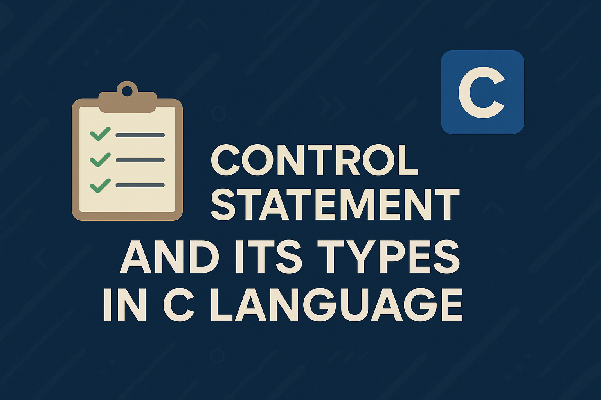

Control Statements in C: Sequence, Selection & Repetition Explained

Control Statements are instructions that control the flow of execution in a C program. They make programs flexible, interactive, and efficient by adding decision-making and looping capabilities.
Types of Control Statements in C
There are three main types:
1. Sequence (Sequential Control)
Definition: The default way of executing statements — one after another.
How it works: No jumps, no decisions, no loops — just straight execution.
printf("Enter number: ");
scanf("%d", &num);
printf("You entered %d", num);
Here, each statement runs in order.
2. Selection (Decision-Making)
Definition: Executes a block of code only if a certain condition is true.
Purpose: Allows branching (choosing between two or more paths).
Common statements: if, if-else, if-else if-else, switch
if (marks >= 50) {
printf("Pass");
} else {
printf("Fail");
}
3. Repetition (Looping)
Definition: Executes a block of code multiple times until a condition becomes false.
Purpose: Avoids repeating code manually.
Common loops: for loop, while loop, do-while loop
for (int i = 1; i <= 5; i++) {
printf("%d\n", i);
}
Summary Table
| Type | Purpose | Examples in C |
|---|---|---|
| Sequence | Runs statements in order | Normal statement execution |
| Selection | Chooses path based on condition | if, if-else, switch |
| Repetition | Repeats code until a condition is false | for, while, do-while |
Quick Notes – Control Statements in C
- Control Statements – Instructions that control the flow of execution in a C program.
- Three Main Types:
- Sequence: Default execution; runs statements one after another in order.
- Selection: Decision-making; chooses which code block to run based on conditions (if, if-else, switch).
- Repetition: Looping; repeats a block of code multiple times until a condition is false (for, while, do-while).
- Purpose: To make programs flexible, interactive, and efficient by adding decision-making and looping capabilities.
MCQs
1. Which control statement type runs statements one after another?
- a) Sequence
- b) Selection
- c) Repetition
- d) Function
Answer: a) Sequence
2. Which control statement allows decision-making?
- a) Sequence
- b) Selection
- c) Looping
- d) Recursion
Answer: b) Selection
3. Which control statement repeats a block of code?
- a) Looping
- b) Selection
- c) Sequence
- d) Condition
Answer: a) Looping